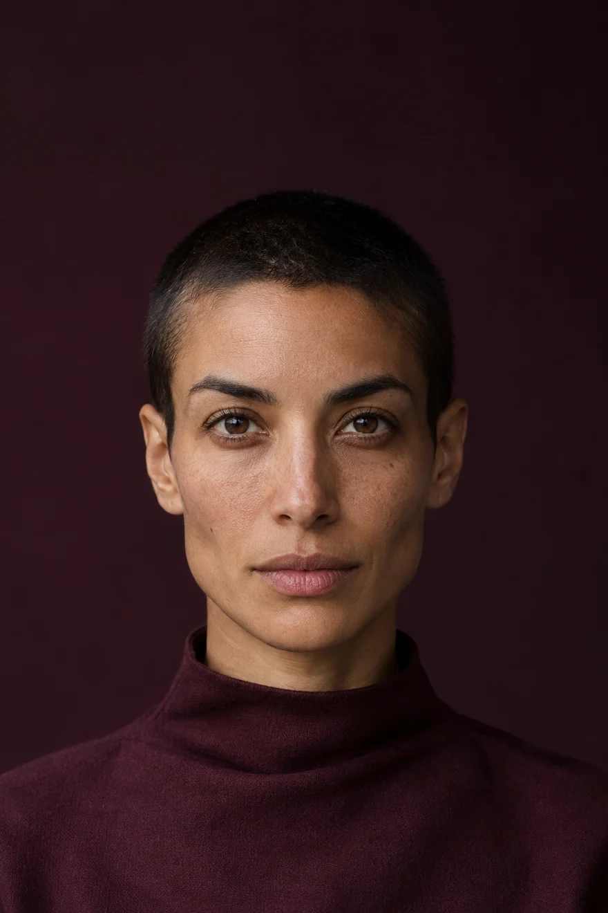

Find your primary season
Each flag includes core, light, and deep colors, plus neutrals and metals. You can leave the sub-season open if the closer comparisons feel uncertain.
Personal color studio
Find your season and the colors you want to wear. Compare whole palettes and individual drapes against the same portrait.
Free to use. Your portrait stays on this device.

Drag to move. Pinch and turn with two fingers. On a keyboard, use arrow keys, + / − to zoom, or [ / ] to turn. You can also use the buttons.
Use an evenly lit portrait, or freeze a camera frame to compare.
Face a window and avoid mixed light. Move hair away from your face, and where practical use a photo without filters or makeup. A steady frame makes small differences easier to compare.
Each flag includes core, light, and deep colors, plus neutrals and metals. You can leave the sub-season open if the closer comparisons feel uncertain.
Notes are included when you export an analysis or report.